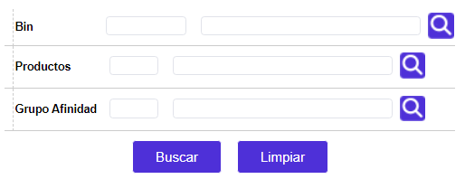
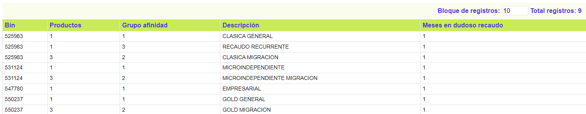

Castigo de cartera
Parámetros productos: Mediante esta función la entidad podrá informarse acerca de la manera como se definieron los parámetros para que determinado producto pase a dudoso recaudo de acuerdo con los períodos en mora.
Filtro: El formulario cuenta con un filtro inicial de búsqueda, necesario para la consulta de la información:

Bin |
Lista de valores del filtro de la cual se selecciona el bin o prefijo con el cual se va a realizar la búsqueda. |
Productos |
Este campo contiene lista de valores de la cual se selecciona el producto o segmento que va a ser filtrado. |
Grupo afinidad |
Campo con lista de valores de la cual se selecciona el grupo de afinidad que junto con el bin y el segmento pueden ser filtrados para realizar la búsqueda. |
El formulario contiene un botón en la parte superior que permite regresar a la opción principal: Candidatas.
